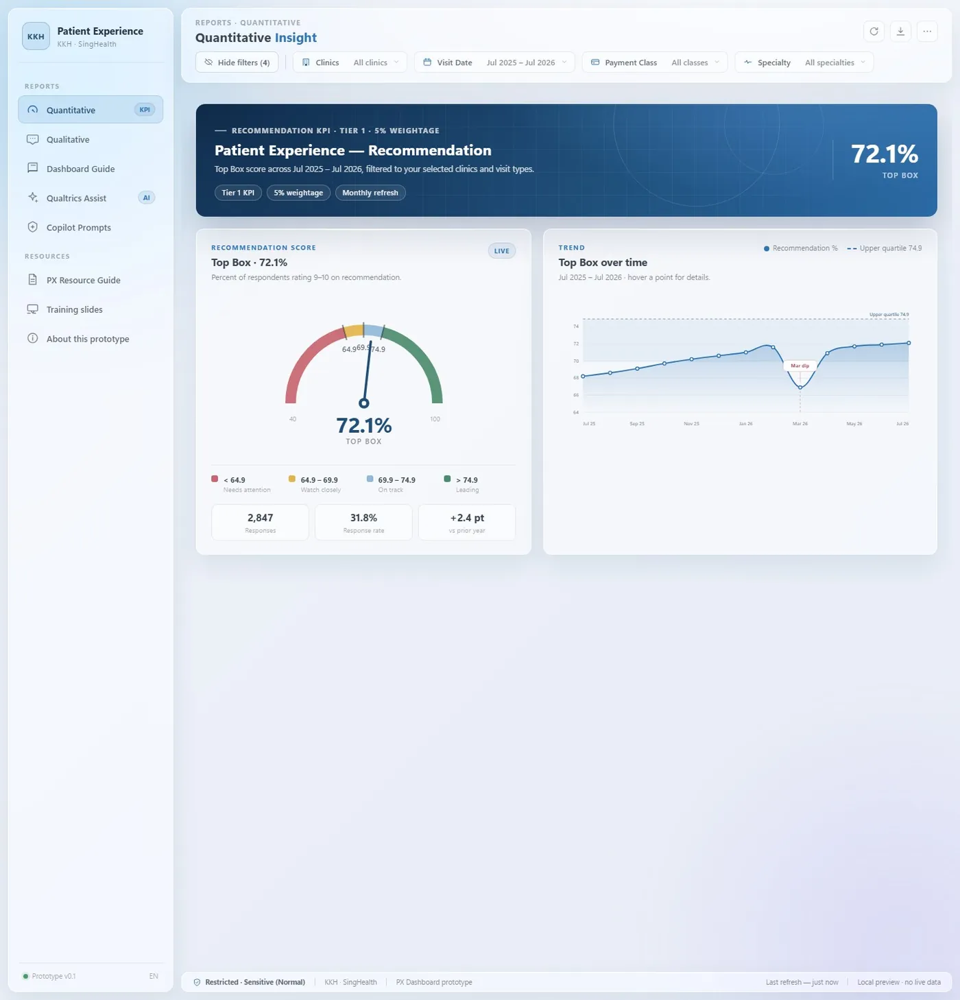
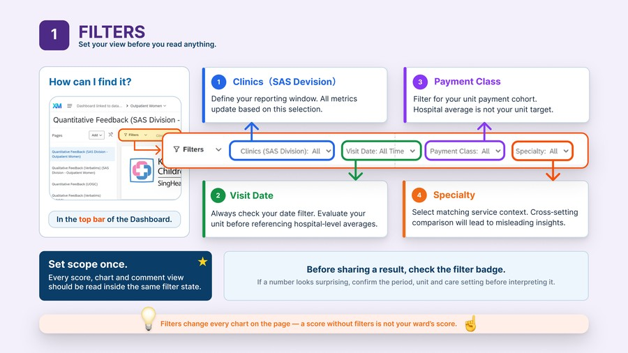
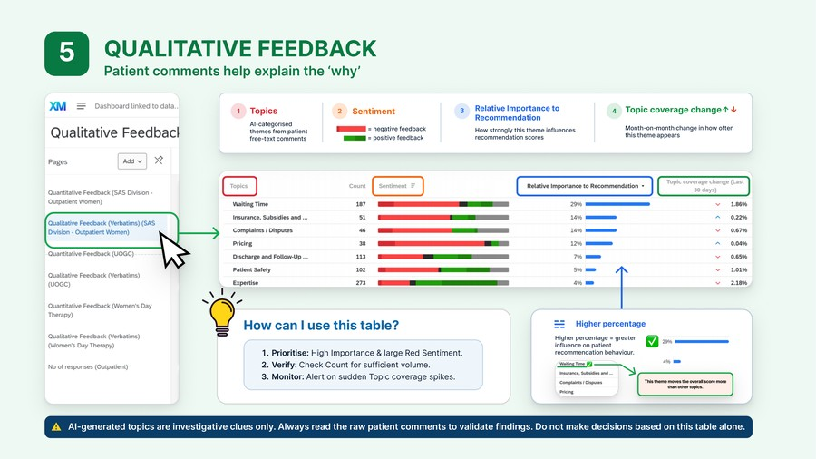
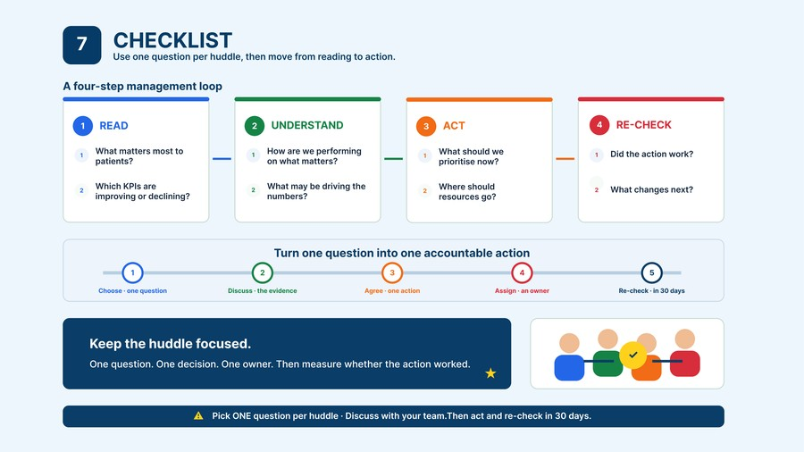
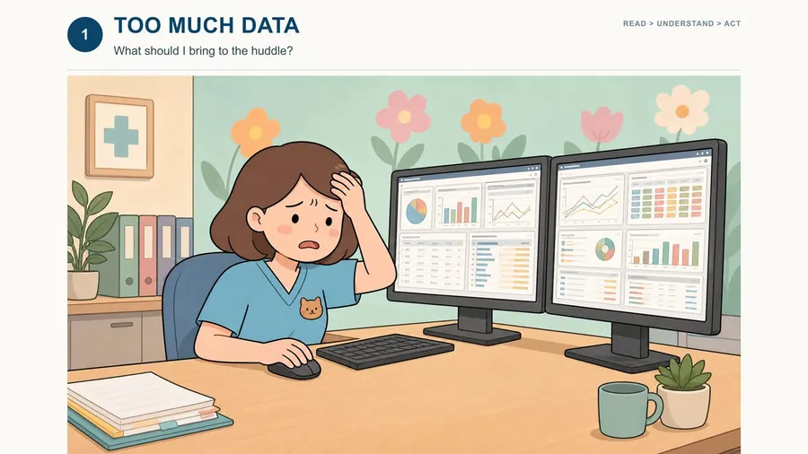
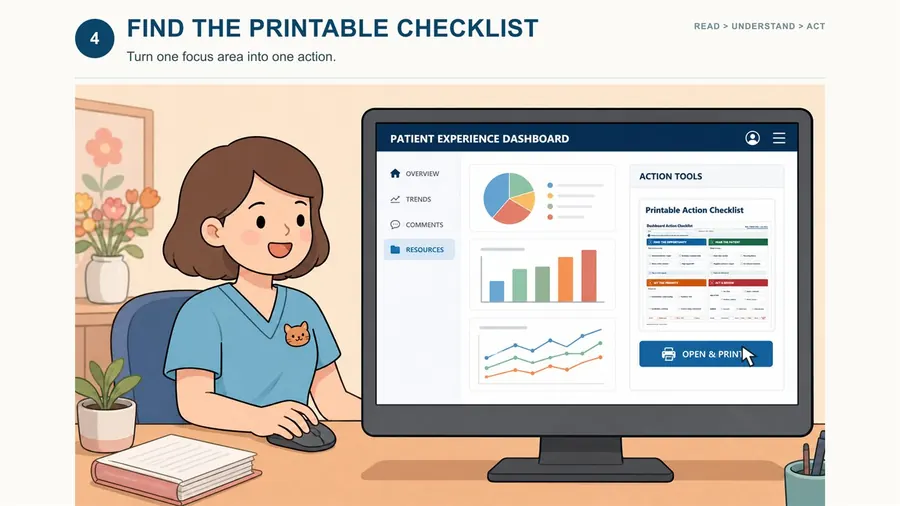
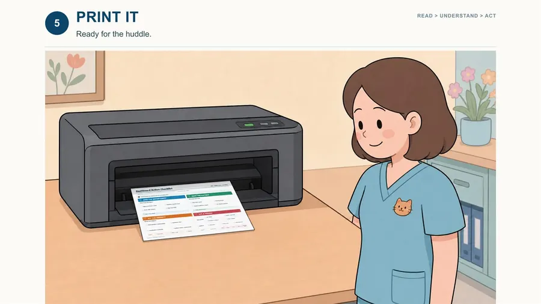
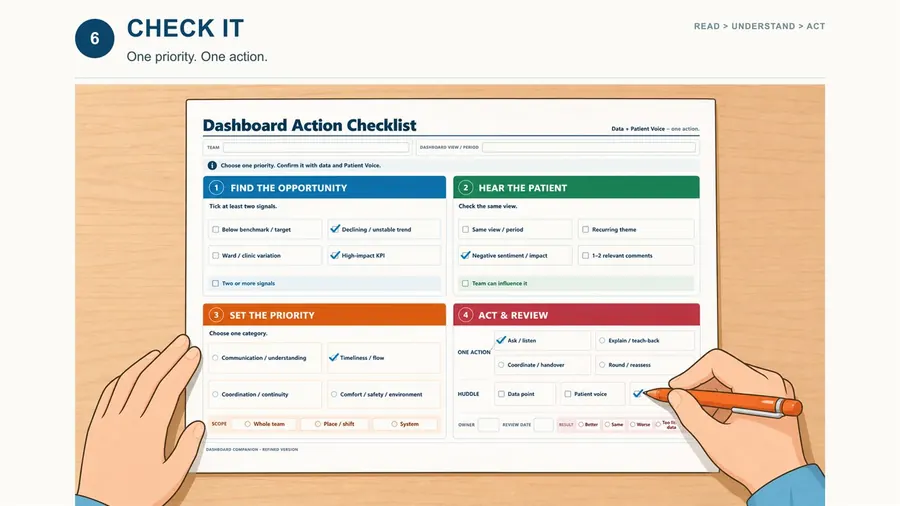

KKH 妇女儿童医院
多指标患者体验看板
让一组没人读完的问卷数据，进入 5 分钟的晨会。
问题不在采集，在读
患者报告体验测量（PREMs）每周回收一批问卷，汇总成指标。数据一直都有，问题是没有人在读——一线真实的工作流是纸：晨会上摊开的是一张打印表，不是屏幕。
我要做的不是再做一个更好的报表，是让这批数据在 5 分钟内变成「今天先做什么」。
四条约束（都不是我定的）
- 两种视角要的不同。管理层看趋势与驱动因素，护士长看这一班先盯哪两件事——同一批数字，两种读法。
- 一屏只有几分钟。晨会 5 分钟，不能要求任何人先学一个新工具。
- 真实工作流是纸。病房里摊开的是打印表，屏幕版必须能让位于纸版。
- 拿不到个体数据。只有操作层聚合值，任何单个患者的记录都看不到。
我的角色
研究（两场一对一深访：管理层 34 分钟、护士长 54 分钟，相隔四天）、架构（把多指标收敛成一条动线）、界面（四视图工具站 + 八页指南）、实现（零框架单文件前端）。工具站、故事板与五个方案由我独立完成；Resource Guide 与 Checklist 与四人团队共同完成；院方负责需求确认与合规评审。

两种视角，不是两套需求
同一个项目里，管理层要「更少」，护士长要「能一眼扫」。看起来互相矛盾，这是设计里最容易处理错的一刻：直觉是排需求优先级。
三层不是三种界面，是三种读法
| 场景 | 谁在看 | 给他的形态 |
|---|---|---|
| 看结果 | 管理层：这一周整体在往哪走、什么在驱动它 | 一张趋势 + 三个核心概念，不做交互 |
| 看执行 | 护士长：先扫整体，再钻异常项 | 一张清单，能打印 |
| 看来源 | 我自己补的一层：这个数字凭什么 | 可展开的来源，不占主屏 |
两个人说的都是「我想要一个能看数据的页面」，但一个要的是一句话，一个要的是两件事。把这两样压进同一屏，就是那种谁都不满意的报表。第三层「看来源」没有访谈原话，也没有访谈到医生——它来自我对 PI/QI 断点的判断，不是受访者提出的要求。
从十几个指标到三个数
第一版把所有指标都上，一屏挤满了图表。这是我做过最典型的一次「信息更全 → 判断更准」的错误假设。
留下三个数的三条标准
不是「选最重要的三个」，而是每个留下的数字都必须同时满足三条，缺一条就下沉：
| 条件 | 含义 |
|---|---|
| 带方向 | 升还是降，不能中性——中性的数字不产生动作 |
| 带对象 | 哪个病区、哪个指标——不能只说「整体」 |
| 带下一步 | 动不动、动哪里——读完就知道要做什么 |
反例
「出院说明低于目标。」——这句话只是复述状态，不说是升是降、也不说该动哪里。读者还得自己判断，那就等于没做设计。
替换成的一句是：「三个指标里，只有出院说明在往下走，其余持平。」同样是事实，但它带了方向、对象，也暗示了下一步。
被砍掉的四样
- 环形进度图。读数要换算，5 分钟里没人换算。
- 同比 / 环比双轴。两条线放一起，重点会平均掉。
- 原话直接上首屏。单句有杀伤力，但不指向下一步。
- 领导视角的「总览」。与「今天做什么」是两件事，退到第二层。
不是删掉，是分层——四样都还在系统里，只是不再抢第一屏。
我没有重做看板，我做的是翻译层
看板是院方既有的系统，动它等于动他们的考核口径——院方明确说过不要改。所以这次交付的是外面那一层：把「这一屏该怎么读、读完做什么」写成八页，任何科室都能照着用。



先设筛选器
三次读完

只选一两个

给 AI 的句式

主题只是线索

重要 × 表现

能打印的四步
八页指南与四步清单为四人团队共同完成；我的部分见下一节的角色行。

八页按同一个顺序编：先读、再懂、后做。每一段只回答一个问题，答完才能往下走。
| 段 | 回答的问题 | 设计意图 |
|---|---|---|
| Read | 今天整体怎么样，哪一项出了事。 | 不让人做加法：页面的顺序，就是优先级。 |
| Understand | 这一项为什么出了事，和谁比、跟上周比。 | 同一指标给三种参照：目标线 / 同级均值 / 自己上周。 |
| Act | 今天这一班，谁在什么时候做什么。 | 不是按钮，是四个带责任人和时间的格子。 |
它必须能打印
工具站做完了，我以为交付完成。实际是：她要的是能拿在手上的东西——晨会上摊开的是纸。
三件套
| 件 | 量 | 一句话 |
|---|---|---|
| Resource Guide | 8 页 | 七节加封面：口径 → 读数 → 排序 → 提问 → 原话 → 定位 → 清单（团队共同完成） |
| Checklist | 4 步 | 读 → 懂 → 做 → 30 天复看，带责任人与结果判定（团队共同完成） |
| Storyboard | 7 帧 | 从打开到采取行动，七帧走完 |
三件套不是交付物清单，是让院方的人在我离开之后还能继续用。
五个方案，为什么推进 A5 卡
- 五个方案 晨会速查卡 / 术语速查卡 / 投诉分类指南 / 控制图看图指南 / 模块化活动册 —— 并行提出，互补不迭代
- 为什么选 A5 护士长缺的是一张能带进晨会的纸，不是又一个要登录的系统 —— A5 是纸张尺寸，不是版本号
- 介质之争 管理层原话不要实体卡（几百个部门就是几百份）；形式保留，介质改成每周生成的 PDF —— 这是取舍
它走到「有人愿意接着做」这一步，不是临床部署。 这也是我在简历与作品集里对 KKH 的固定口径。
谁来接手
数据太多 → 一起行动
七帧分镜是给护士长看的，不是给评委看的：每一帧只前进一步，最后一帧是「一起动手」。







→ Find The Guide
→ Find The Focus
→ Find The Printable Checklist
→ Print It
→ Check It
→ Act Together
三个如果重做
这个项目最大的风险不是做得不够，是我做完之后，没有第二次机会验证它。
- 我会更早做那次 N=3 可用性测试，而不是等五个方案都成形之后。教训：验证太晚。
- 我会在第一周就拿到一张真实在用的打印表，而不是自己推测纸版长什么样。教训：约束靠推测，不靠观察。
- 我会把「谁在维护这套界面」提前问清楚，而不是默认有人接。教训：交接想当然。
- 我会把两场深访再做第二遍，而不是各问一次就定稿。教训：34 分钟和 54 分钟只够问到流程，不够问到抵触，样本就两个人。
我说过「不」吗
这个项目里，我没有拒绝过任何需求。现在回头看，这是我最大的缺失——我把「都做」当成了负责。拒绝一个需求需要三个前提：有人在提、你有权说不、你能承担后果。整册五个项目里，只有 KKH 同时具备这三条——而我完全没用上。
如果再做一次，我会把那次 N=3 测试提前到方案成形之前。